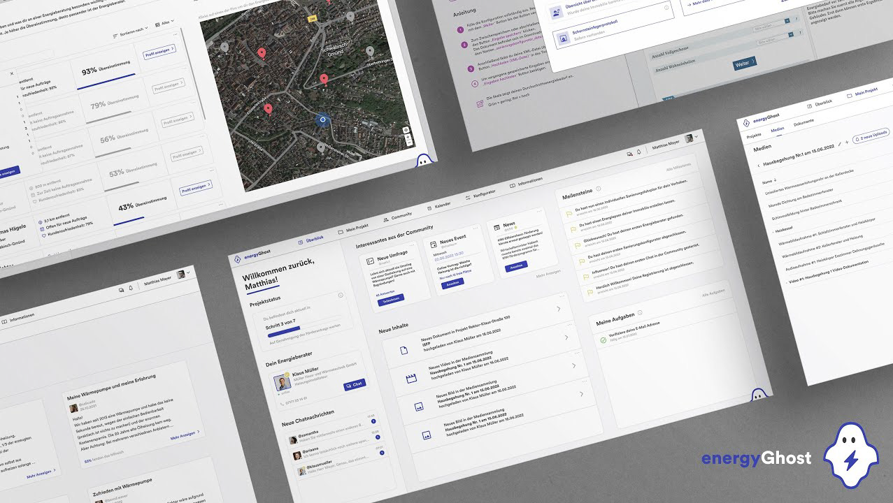

energyGhost - Bachelorarbeit
Projektübersicht
Dies ist die Detailseite für das Projekt "energyGhost - Bachelorarbeit". Dieses innovative Projekt befasst sich mit der Analyse und Optimierung des Energieverbrauchs in Haushalten und Unternehmen. Ziel war es, durch intelligente Algorithmen und benutzerfreundliche Visualisierungen Einblicke in das Verbrauchsverhalten zu geben und Potenziale zur Energieeinsparung aufzuzeigen.
Im Rahmen dieser Bachelorarbeit wurden verschiedene Datenquellen integriert, um ein umfassendes Bild des Energieflusses zu erhalten. Die Entwicklung umfasste sowohl Hardware- als auch Softwarekomponenten, die in einer prototypischen Umgebung getestet wurden. Die Ergebnisse zeigten signifikante Möglichkeiten zur Reduzierung des ökologischen Fußabdrucks und der Betriebskosten.
Hauptmerkmale
- Echtzeit-Energieüberwachung: Detaillierte Erfassung und Anzeige des aktuellen Energieverbrauchs.
- Anomalieerkennung im Verbrauch: Automatische Identifizierung ungewöhnlicher Verbrauchsmuster zur Fehlerbehebung oder Optimierung.
- Personalisierte Sparvorschläge: KI-basierte Empfehlungen zur Reduzierung des Energieverbrauchs, zugeschnitten auf individuelle Gewohnheiten.
- Interaktive Datenvisualisierungen: Benutzerfreundliche Grafiken und Dashboards zur einfachen Interpretation komplexer Verbrauchsdaten.